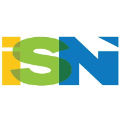
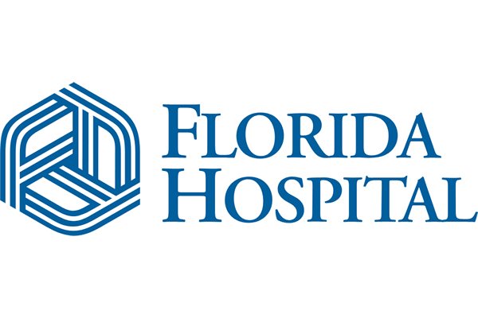

-- Resume and Portfolio --
Alfred Suarez Fontanez
Summary
Multiple Award-Winning Experienced Professional Focused on
Powerful Automation Solutions Proven to Increase Return of
Investments, Lower Business Operation Costs, Empower Rapid Growth
and Blow Away Past Any Market Competitors. Specialized in Proven,
Powerful Lean Strategic Methods to Minimize Bleeding Capital and Bigger,
Better and More Effective Solutions in Your Business.
Work Experience
- Founder - Pixel Waves
Feb 2018 - Present
- Handle International Acquisition and Negotiations for importing goods and services.
- Deployment and Management of Marketing Advertisement Systems for SEO, Google, Facebook, Amazon, YouTube, Bing, PPC and More.
- Creative Marketing Media Content for Brands, Products and Services.
- Designing, Prototyping, Development and Manufacturing of Physical Products using our Proprietary ARK Strategic Plan.
- Full Lifecycle Deployment of SaaS using our Proprietary ARK Strategic Plan.
- Management of International and Local Workforce Team.
- Consultation for Small to Large Business Technical Operations and Strategic Marketing Plans for Wholesale or ECOM.
- Manager of Integration Systems - Integrated Supply Network (ISN)

Oct 2012 - Dec 2018 · 6 yrs 3 mos
- Manage Acquisitions of new technologies and 3rd Party Service Contracts.
- Plan, Develop and Deploy Infrastructure, and Software solutions to support the business fast growth from acquisitions and new territories using a wide range of the latest technologies available (Cisco Infrastructure/VoIP Unity, MPLS, VMWare, Avalanche, Crystal Reports Server, MSSQL, HighJump, Symantec, Motorola, Zebra, Intermec and many others).
- Provide Training and Support to overall organization, and IT Team.
- Engineer new low cost strategies and solutions to minimize risks, and increase organization productivity.
- Generate Daily Systems and Development Reports using SolarWinds and BMC Track-It! System.
- Management of Information System - Florida Hospital

Jun 2008 - Oct 2012 · 4 yrs 5 mos
- Troubleshooting network and systems issues.
- Achieved Role Model of Excellence, Teamwork, Technical Software and Knowledge for Florida Hospital.
- Earned Employee of the Month and Honorable Mentions throughout 2010, 2011 and 2012.
- Perform training for new employees and current employees within MIS Support Center.
- Continuously implement new procedures to resolve issues within the mainframe systems and Microsoft environments.
- Engineering Planner - Lockheed Martin

Apr 2005 - Sep 2007 · 2 yrs 6 mos
- Prepared and coordinated the plans and schedules for the new program.
- Tracked and Managed Milestones, Action Items and project resources.
- Determined, monitored, and reviewed costs, operational budgets and schedules, and manpower requirements.
- Analyzed effects of projects upon various areas such as Engineering, Facilities, and the labor pool to determine the most practical and cost-efficient methods to obtain the required resources.
- Applied Lean Six Sigma practices and mythologies.
- Building and Engineering of Technology Systems.
Formal Education
- Keller Graduate School of Management of DeVry University
- Master of Network and Communications Management, Information Technology Project Management 2009 - 2010
- DeVry University of Orlando
- Bachelor of Science in Technical Management, Business Administration, Project Management, Electronic and Computer Engineering Techology 2002 - 2005
- Activities and societies: Delta Epsilon Iota
Skills
- Business Analyst
- Certified SCRUM Master
- Certified Project Manager
- Systems Analyst and Engineer
- Electronic and Computer Engineering
- Full Web Development Stack
- SQL, HTML, CSS, JavaScript, PHP, Python, C/C++ and More
- Enterprise Software Technology Stack
- SQL, HTML, CSS, JavaScript, PHP, Python, C/C++ and More
Contact